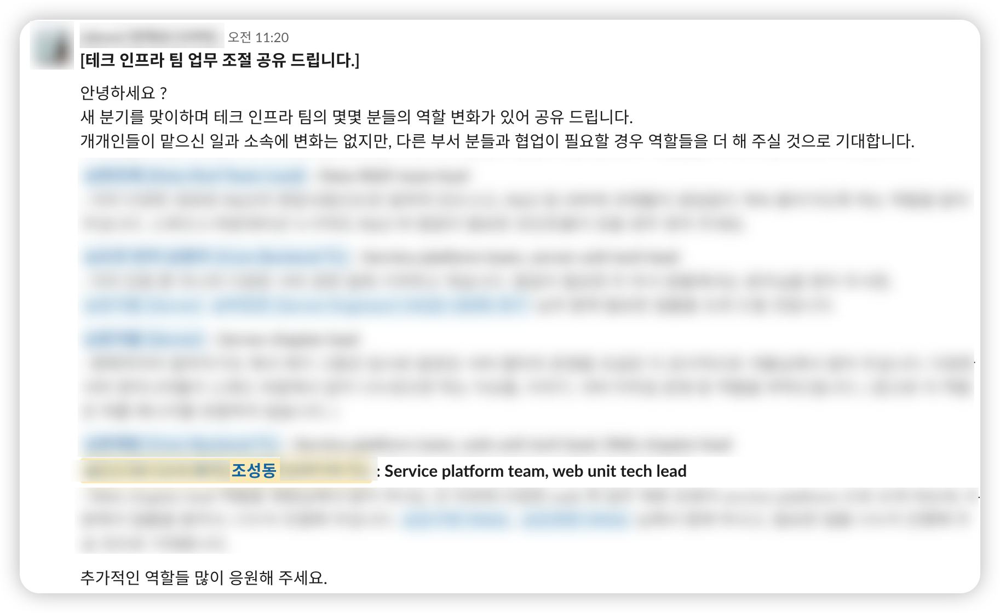

테크리드 1년 회고
테크리드를 하게되면 어떤 역할을 해야할 지 잘 몰랐고, 그들이 어떤 역할을 하고 있는 지 조차 정확히 알지 못했습니다. 이 글은 처음으로 테크리드가 되고 나서의 고민과 경험을 공유하고자 쓰게 되었습니다.
어느 날 테크리드가 되었습니다
22년 6월의 어느 날 테크리드 직책을 맡게되었습니다.
이 소식이 처음에는 인정받는 것 같아 기뻤지만 한편으로는 관리자의 길로 가는 것 아닐까 걱정도 있었습니다. 테크리드라는 책임을 갖게되면 팀의 기여자 역할을 벗어나기 때문에 코드를 작성하는 시간이 더 적어지고 매번 여러 회의에 불려다니며 이렇게 내가 즐거워 하는 코드 작성과는 멀어질 것 같아 걱정이 앞섰던 것 같습니다.
사실 제가 테크리드가 된 것 자체가 의외였습니다. 4년의 짧은 개발 경력을 가지고 있었고 제 자신이 아직 주니어 개발자라고 생각했기 때문입니다. 돌이켜 보면 저는 다른 개발자보다 잘하는 몇 가지 장점은 있었는데, 다른 팀이나 다른 역할의 사람과 소통 하는데 어려움이 없었고, 업무 우선순위를 명확하게 하고 일하는 것을 즐기고, 팀 전체의 생산성을 높이는 데 계속해서 신경쓰고 팀의 성과를 높이려 노력해왔던 것 같습니다.
이 날 저는 매니저를 찾아가 물었습니다.
나: "제가 아직 테크리드가 될 수 있는 자격을 갖췄는 지 잘 모르겠습니다. 또한, 저는 이 역할에 기대하는 것이 어떤 것인지 잘 상상이 되지 않습니다. 저에겐 이 직책이 부담이고 더 적절한 사람이 맡는 것이 좋을 것 같습니다." 매니저: "이미 그 역할을 해주고 계세요. 너무 어렵게 생각하실 필요 없어요. 다른 웹 엔지니어 구성원분들의 레퍼런스가 되어주세요."
우선 위 말을 듣고 더 부담이 커졌으나, 테크리드가 무엇이고 내가 어떤 책임을 가져야하는 지 공부하기 시작했습니다.
테크리드란 어떤 책임을 갖는가?
불현듯 테크리드를 맡기 몇 달전에 다른 엔지니어 동료에게 선물받았던 개발 7년차, 매니저 1일차라는 책이 떠올랐습니다. (그는 닥칠 미래를 미리 알고 있었던 것일까요? 아니면 그저 우연일까요?)
이 책에서 테크리드의 책임에 대해 자세히 설명되었던 것이 기억났습니다. 아직 매니저가 되려면 멀었다고 생각했기에 그렇게 주의깊게 본 책은 아니었는데, 다시 책을 펼쳐보게 되었습니다.
대개 테크리드는 가장 복잡한 기술을 다루고 최고의 코드를 작성하는 개발자에게 맡겨야 한다고 생각한다. (...) 이는 경험 많은 매니저조차 흔히 빠지는 일반적인 오해다. 테크리드의 역할을 팀에서 가장 경험이 많거나 실력 있는 개발자로 연결지어 생각하는 것은 잘못된 생각이다. (...) 테크리드는 팀 전체의 성장을 위해 기술 프로젝트 리더로 활동하면서, 대규모 프로젝트에서 자신의 전문성을 살려 팀에 기여한다.
정리하면 테크리드는 엔지니어 개인으로써 기여하는 범위보다 더 큰 범위에 대한 기여를 하며, 개발 업무의 계획을 세우고 함께하는 구성원이 프로젝트를 효율적으로 마무리 지을 수 돕습니다. 그리고 기존에 하던 개발 업무도 계속해야 합니다.
확실히 더 바빠질 게 보입니다. 하지만 이 또한 배움이라고 생각했습니다.
같이 일하는 동료를 파악하고, 목표를 정해보자
우선 동료들과 소통하는 것과, 기술적 방향성을 정하는 것 두가지 활동을 먼저 하기로 결심했습니다. 혼자서는 빠르게 나아갈 수 없고 목표 없이는 길을 찾을 수 없다고 생각했기 때문입니다.
Action item 1: 구성원 분들과의 1on1
각 구성원 분들과 1on1을 진행하며 "어떤 커리어를 쌓고 싶은 지"에 대해 자주 소통하려 노력했습니다. 현재 우리의 제품에서 해결해야하는 문제들과 구성원이 쌓고 싶은 기술적 경험들이 되도록 align할 수 있도록 노력했습니다.
- 좋았던 것: 구성원 분들의 커리어에 대해 더 잘 이해할 수 있었습니다. 이를 통해 팀의 기술적 방향성을 설정하고 담당자를 정할 때 더 수월하게 할 수 있었습니다.
- 개선해야할 것: 기피되는 업무와 선호하는 업무가 있을 수 있습니다. 예를 들면 대부분의 구성원은 단순 프로모션 페이지를 만드는 것은 단기적인 비즈니스 임팩트를 낼 수 있겠지만 내 기술적 성장에는 도움이 되지 않는다고 생각할 수 있습니다. 그리고 상대적으로 새로운 제품을 만들거나 장기적인 비즈니스 임팩트를 낼 수 있는 프로젝트에 참여하는 것을 선호합니다. 현실적으로 이를 정확히 분배하는 것은 불가능에 가깝기 때문에 주번처럼 돌아가면서 이런 업무를 맡긴 하지만 단순하고 반복되는 업무는 최대한 "자동화"를 통해 해결해야할 것 같습니다.
Action item 2: 기술적 방향성 설정
생산성과 업무를 가속화 하는데 있어 필요한 것은 무엇일까요? 우리가 지금 어디를 향해 가고 있는 지 모른다면 길을 잃거나 중요하지 않는 것에 매달릴 수 있습니다. 또한, 같은 목표를 보고 있지 않으면 서로의 의견이 다를 때 답을 찾지 못할 수 있습니다. 로드맵을 계획하는 것은 이에 도움을 주는 일이라고 생각했습니다.
- 좋았던 것: 다음 할 일이 무엇이고 어떤 성과들을 만들어왔는 지, 우선순위는 어떠한 지 주기적으로 확인할 수 있어서 서로의 업무 공유와 우선순위를 정하는데 드는 시간이 줄어듭니다.
- 개선해야할 것: 로드맵을 계획하는 것은 쉽지 않습니다. 특히, 우리의 기술 로드맵은 다른 제품들의 로드맵과도 연결되어 있기 때문에 더 어렵습니다. 기술 로드맵에 너무 많은 시간을 쏟으면 비즈니스 로드맵을 놓치게 되고, 비즈니스 로드맵에 너무 많은 시간을 쏟으면 기술적으로 뒤쳐지게 됩니다. 이를 해결하기 위해 비즈니스 로드맵과 기술 로드맵을 분리하고, 각 팀의 비즈니스 로드맵을 더 높은 시급성을 두되 기술 로드맵은 별도의 일정으로 지속적으로 수행하는 것으로 개선해야합니다.
1년이 지난 지금, 이대로 괜찮은가?
테크리드를 맡게된 것도 1년이 지났습니다. 스스로 회고를 해보면 아래와 같습니다.
Continue: 개발 업무를 다른 구성원에게 위임하자
초기에는 기술적 문제를 직접 해결하려 했었습니다. 이게 구성원들을 더 배려하는 일이라 생각했으나 이는 일이 잘못되었을 때 원망을 듣는 일을 만드는 것이었으며 실제로 수행하는 것도 불가능했습니다. 그래서 점점 구성원들에게 일을 위임하고, 팀의 생산성을 높이는 의사결정에 한 명의 플레이어로써 참여하였습니다. 결과적으로 이러한 활동이 구성원들 참여와 아키텍처 이해도를 높이고, 팀의 생산성을 높이는데 더 도움이 되었습니다.
Stop: 코드 작성 비중이 크다
테크리드를 맡게된 작년에는 이 역할에 대해 많이 고민하고 액션 아이템들을 세워 수행했던 것 같습니다. 하지만 올해 들어서는 팀에 기여하는 코드 보다 제품에 필요한 코드를 작성하는 시간이 절대적으로 많아지면서 테크리드의 역할은 맡고 있는 프로젝트가 끝나고 시간이 남을 때 신경을 썼습니다. 이는 팀의 성장에 지속적인 도움은 되지 않았습니다.
Start: 테크리드 활동을 코드 작성 시간과 분리하여 관리하자
개발자로서의 역할을 수행하는 것은 필수적입니다. 하지만, 개발자의 역할을 수행하면서 테크리드로서의 역할을 잊어버리는 것은 팀의 성장에 도움이 되지 않습니다. 테크리드의 역할을 수행하면서도 개발자로서의 역할을 잊지 않도록 노력하려고 합니다. 결국 나의 균형을 잘 잡는 것이 중요한 것 같습니다.
한 주의 하루 정도는 테크리드로서의 역할을 수행하는 시간을 가지려고 합니다. 이 시간에는 팀의 기술적 방향성을 생각하고, 팀원들과의 소통을 하며, 팀의 성장을 위한 활동을 하려고 합니다.
느낀 점
테크리드라는 직책은 쉽지 않은 것 같습니다. 그 전과 비교해서 가장 어려운 점은 '개인의 기여'만 생각했다면 이를 포함하여 '팀의 성장' 까지 신경써야한다는 것 입니다. 하지만, 이러한 활동을 통해 팀의 성장을 도모하는 것은 개발자로서의 역할을 수행하는 것보다 더 큰 보람을 느끼고 있고 더 많은 것을 배우고 있습니다.